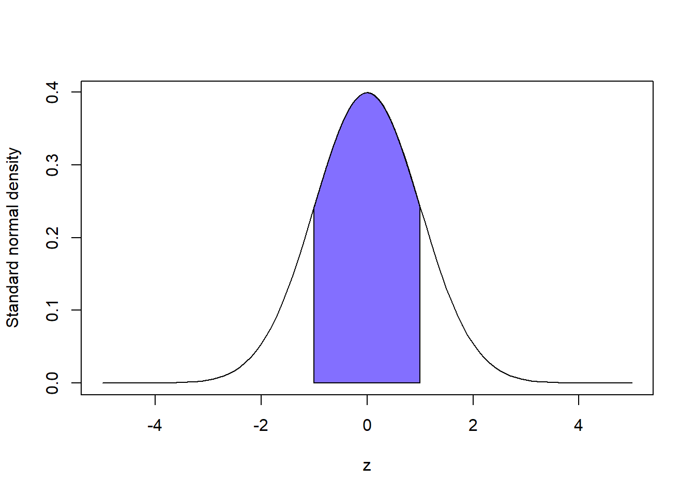
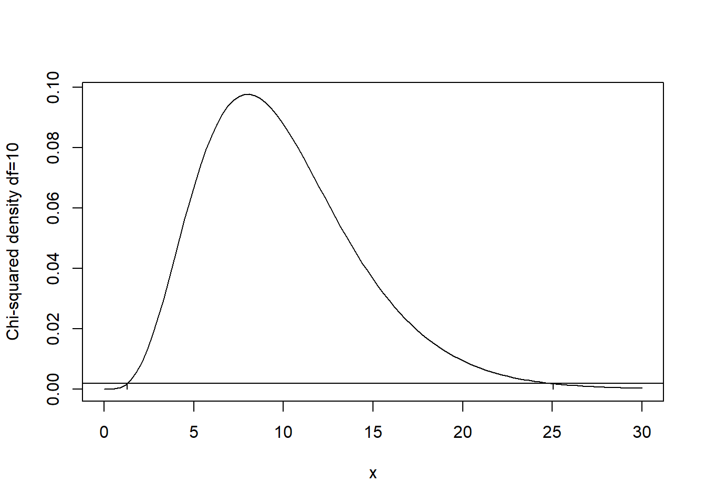
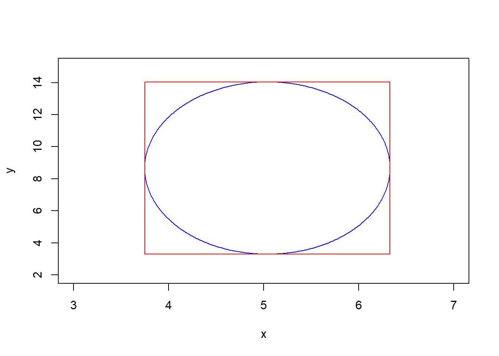

Chapter 5 Confidence Intervals
5.1 Why want interval-valued estimates?
Point estimators, like the sample mean, certainly help to describe features of the population. But, the trouble with point estimators is that, on their own, they provide no sense of uncertainty. On one hand, a point estimator is just one number, and one number seems very precise. So, in a sort of psychological sense (and I’m being very loose with that term) people may feel a false sense of certainty about a point estimate. For example, if I say ``the sample mean is 5” someone could very reasonably expect the population mean is quite close to 5, but, given a little intuition, that person’s opinion may change quite a bit depending on whether the sample size is, say, 10 or 100. On the other hand, in a mathematical statistical sense, we know an estimator is a random variable with a distribution that, usually, has a finite variance. And, if known, we could use knowledge of that distribution to quantify the variability (read uncertainty) inherent in the estimator. So, besides the point estimate itself, it would be helpful to report some measure of variability of the estimate to give the user a more informed view of the estimate of the population mean (or other feature being estimated).
One way to include information of the uncertainty of a point estimate is to include an estimate of the estimator’s standard deviation—this is usually called a “standard error”. For example, the sample mean \(\overline X_n\) estimates the population mean \(\mu\) and if the population has a finite variance \(\sigma^2\) then the standard deviation of \(\overline X_n\) is \(\sigma/\sqrt{n}\). Usually, \(\sigma^2\) is unknown, so it is replaced by a point estimate, say, the usual sample variance \(S_n^2 = \frac{1}{n-1}\sum_{i=1}^n (X_i - \overline X_n)^2\) to get the standard error \(\sqrt{S_n^2/n}\). A common practice is to report the estimate \(\overline x_n\) along with the standard error \(s_n/\sqrt{n}\).
One drawback of reporting an estimate and its standard deviation is that it’s not clear how much variability one standard deviation really represents; it depends on the sampling distribution of the estimator. For example, if an estimator is normally distributed then an interval of one standard deviation about its mean contains about \(68\%\) of the distribution, and see the figure below. One the other hand, suppose an estimator has a Chi-squared distribution with \(5\) degrees of freedom. Then an interval of radius one standard deviation about its mean contains about \(72\%\) of the distribution. The point is that one standard deviation does not provide an objective summary of uncertainty across different distributions.

To remedy this issue of the vagueness of standard deviation/standard error we introduce the concept of a confidence interval. An interval-valued estimate is an interval or range of values representing a set that may plausibly contain the true parameter value. Let’s denote this interval by \((\ell, u)\), its lower and upper bounds. Then, a reasonable way to define the endpoints is to select them so that the interval has the confidence property
\[P(\ell \leq \theta \leq u) = 1-\alpha\]
where \(\theta\) is the true parameter value and \(\alpha \in (0,1)\) is up to the user to decide—usually \(\alpha\) is near zero. The probability statement is with respect to \(\ell\) and \(u\), meaning these endpoints are random variables—in particular, they should be statistics, i.e., depended on the data. Then, a confidence interval is a random interval with a prescribed chance of “catching” the true parameter.
5.2 Normal population mean example
Suppose \(X_1, \ldots, X_n\) is a random sample from \(N(\mu, 1)\). Let’s find a \(100(1-\alpha)\%\) confidence interval (CI) for \(\mu\). Since \(\overline X_n\) is a great estimator of \(\mu\) it makes sense the endpoints of the interval would depend on \(\overline X_n\). The confidence interval is supposed to be a range of plausible values of \(\mu\); and, \(\overline X_n\) seems the most plausible, so the interval ought to look like \((\overline X_n - c_1, \, \overline X_n + c_2)\); in other words, the interval is the sample mean plus or minus something extra. We known \(\overline X_n \sim N(\mu, 1/n)\), which is a symmetric distribution. So, it would make sense for our \(\pm \text{ something extra}\) to be symmetric, i.e. the interval should have the form \((\overline X_n - c, \overline X_n + c)\) for some \(c>0\). Now, it just remains to specify \(c\) such that the interval has the confidence property. We want
\[P(\overline X_n - c \leq \mu \leq \overline X_n +c) = 1-\alpha.\]
Subtract \(\overline X_n\) and standardize to get the standard normal probability
\[P\left(-\frac{c}{1/\sqrt{n}} \leq \frac{\overline X_n - \mu}{1/\sqrt{n}} \leq \frac{c}{1/\sqrt{n}}\right) = 1-\alpha\]
\[P\left(-\frac{c}{1/\sqrt{n}} \leq Z \leq \frac{c}{1/\sqrt{n}}\right) = 1-\alpha.\]
This means \(P(Z\leq \frac{c}{1/\sqrt{n}}) = 1-\alpha/2\) by symmetry of the standard normal distribution. In other words, \(\frac{c}{1/\sqrt{n}}\) is the value such that
\[1-\alpha/2=F_Z(\frac{c}{1/\sqrt{n}})=\int_{-\infty}^{\frac{c}{1/\sqrt{n}}} \frac{1}{\sqrt{2\pi}}e^{-\frac{1}{2}z^2}dz.\]
This defines \(\frac{c}{1/\sqrt{n}}\) as the \(1-\alpha/2\) standard normal quantile. Given a choice of \(\alpha\) it’s not easy to solve for \(c\) in the above (integral) equation, but we can use the built-in R function qnorm to find this value. Let \(\alpha = 0.025\), for example, so that the probability our interval contains \(\mu\) is \(95\%\). Then, \(\frac{c}{1/\sqrt{n}} = qnorm(0.975) = 1.96\) and \(c = 1.96\frac{1}{\sqrt{n}}\). Conclude a \(95\%\) CI for \(\mu\) is given by
\[\left(\overline X_n - 1.96\frac{1}{\sqrt{n}}, \,\overline X_n - 1.96\frac{1}{\sqrt{n}}\right).\]
More generally, if we denote the \(1-\alpha/2\) quantile of the standard normal by \(z_{1-\alpha/2}\) then
\[\left(\overline X_n - z_{1-\alpha/2}\frac{1}{\sqrt{n}}, \,\overline X_n - z_{1-\alpha/2}\frac{1}{\sqrt{n}}\right)\]
defines a \(100(1-\alpha)\%\) CI for \(\mu\).
Remark: It’s not essential that the above CI (or any CI) is symmetric about a point estimator, but when the sampling distribution of the estimator is symmetric this is the best choice. To see this, note that \[\left(\overline X_n - z_{1-\alpha/3}\frac{1}{\sqrt{n}}, \,\overline X_n - z_{1-2\alpha/3}\frac{1}{\sqrt{n}}\right)\] is also a \(95\%\) CI for \(\mu\), but it is always larger (wider) than the symmetric interval. So, the symmetric interval, which being shorter is more precise, is preferable.
5.3 Other “Exact” CIs for normal population mean and variance parameters
5.3.1 Population mean, unknown variance
Let \(X_1, \ldots, X_n\) be a random sample of size \(n\geq 2\) from \(N(\mu, \sigma^2)\) where both mean and variance parameters are unknown. We know the studentized mean follows a Student’s \(t\) distribution with \(n-1\) degrees of freedom: \[T = \frac{\overline X_n - \mu}{\sqrt{S_n^2/n}}\sim t(n-1).\] Mirroring the argument from above when \(\sigma^2\) is a known value, we assume a \(100(1-\alpha)\%\) CI for \(\mu\) would be symmetric about \(\overline X_n\) with radius \(t_{1-\alpha/2}(n-1) \frac{S_n}{\sqrt{n}}\) where \(t_{1-\alpha/2}(n-1)\) is the \(1-\alpha/2\) quantile of the Student’s \(t\) distribution with \(n-1\) degrees of freedom: \[P\left(\overline X_n - t_{1-\alpha/2}(n-1) \frac{S_n}{\sqrt{n}} \leq \mu \leq \overline X_n + t_{1-\alpha/2}(n-1) \frac{S_n}{\sqrt{n}}\right) = 1-\alpha.\]
5.3.2 Population variance, unknown mean
Let \(X_1, \ldots, X_n\) be a random sample of size \(n\geq 2\) from \(N(\mu, \sigma^2)\) where both mean and variance parameters are unknown. We know the following transformation is Chi-squared distributed:
\[\frac{(n-1)S_n^2)}{\sigma^2}\sim \chi^2(n-1).\]
Now, the Chi-squared distribution is not symmetric—it’s skewed. There are a number of ways to define a \(100(1-\alpha)\%\) CI for \(\sigma^2\) based on the above sampling distribution. Since \(\sigma^2 > 0\) we can define a one-sided interval starting from zero:
\[\left(0, \, \frac{(n-1)S_n^2}{\chi^2_{\alpha}(n-1)}\right)\]
where \(\chi^2_{1-\alpha}(n-1)\) is the \(100(1-\alpha)\) quantile of a Chi-squared r.v. with \((n-1)\) degrees of freedom. Then,
\[\begin{align*}
P(0 \leq \sigma^2 \leq \frac{(n-1)S_n^2}{\chi^2_{\alpha}(n-1)}) &= P(0\leq \frac{(n-1)S_n^2}{\sigma^2} \leq \chi^2_{1-\alpha}(n-1))\\
& = P(\chi^2(n-1) \geq \chi^2_{\alpha}(n-1))\\
&= 1-\alpha
\end{align*}\]
by definition of the quantile.
We can define two-sided intervals as well. The “equi-tailed” interval is not the shortest possible interval, but it has a simple form: \[\left(\frac{(n-1)S_n^2}{\chi^2_{1-\alpha/2}(n-1)}, \, \frac{(n-1)S_n^2}{\chi^2_{\alpha/2}(n-1)}\right).\]
In order to find the shortest possible \(100(1-\alpha)\%\) CI one could draw a horizontal line slicing across the Chi-squared density such that the area under both the line and the density equals \(\alpha\). Then, the intersection points of the line and the density would give the lower and upper Chi-squared quantiles to use in the two-sided interval. Since the density is not symmetric this interval generally would not be based on the \(1-\alpha/2\) and \(\alpha/2\) quantiles like the equi-tailed interval. For example, the shortest \(95\%\) CI when \(df=10\) is based on quantile values of about 1.284 and 25.05. The following plot illustrates this.
## 0.04998856 with absolute error < 8.5e-05## [1] 0.001862438## [1] 0.001863508
5.3.3 Two normal samples, comparing means
Let’s tackle the next topic by way of an example. Suppose infant walking time — the age in months at which babies can walk on their own — is normally distributed. Generally, parents are excited for their infants to begin walking and some parents “take steps” to encourage their infants to walk. We’ll assume it is reasonable to model the population of infant walking times among those infants whose parents no not intervene in walking skills development as a random sample from a normal distribution with mean \(\mu_x\) and variance \(sigma_x^2\); likewise we model the corresponding population of infant walking times influenced by parent behavior by a normal distribution with mean \(\mu_y\) and variance \(sigma_y^2\). Assume this parental influence factor represents a more-or-less standard “treatment”; for example, parents might spend 60 minutes a day encouraging their infant to crawl and stand with assistance or play in a bounce seat to build lower body strength. Child development researchers would be interested to know whether such parental interventions influence infant walking times.
Given observations from an experiment comparing these two groups of infants, how would we answer the researchers’ question? One answer comes in the form of a CI for the difference of means \(\mu_x - \mu_y\). In this case a negative difference indicates some impact of parental involvement. And, if a \(95\%\) CI does not contain zero, then the CI reflects strong evidence in the data that the true means are different.
Based on our knowledge of sampling distributions we know that if \(\sigma_x^2 = \sigma_y^2\) the following statistic has a Student’s \(t\) distribution with \(n+m-2\) df where \(n\) and \(m\) are the sample sizes in each group:
\[\frac{\overline X - \overline Y - (\mu_x - \mu_y)}{\sqrt{S_p^2\left(\frac{1}{n} + \frac{1}{m}\right)}}\]
where \(S_p^2\) denotes the pooled (sample-size weighted average) sample variance. As a result, the following probability statement is exact:
\[\begin{align*}
1-\alpha & = P\left(t_{\alpha/2, n+m-2} \leq \frac{\overline X - \overline Y - (\mu_x - \mu_y)}{\sqrt{S_p^2\left(\frac{1}{n} + \frac{1}{m}\right)}} \leq t_{1-\alpha/2, n+m-2}\right)\\
& = P\left(t_{\alpha/2, n+m-2}\sqrt{S_p^2\left(\frac{1}{n} + \frac{1}{m}\right)}\leq \overline X - \overline Y - (\mu_x - \mu_y) \leq t_{1-\alpha/2, n+m-2}\sqrt{S_p^2\left(\frac{1}{n} + \frac{1}{m}\right)}\right)\\
& = P\left(-(\overline X - \overline Y)+t_{\alpha/2, n+m-2}\sqrt{S_p^2\left(\frac{1}{n} + \frac{1}{m}\right)}\leq - (\mu_x - \mu_y) \leq -(\overline X - \overline Y)+ t_{1-\alpha/2, n+m-2}\sqrt{S_p^2\left(\frac{1}{n} + \frac{1}{m}\right)}\right)\\
& = P\left((\overline X - \overline Y)-t_{1-\alpha/2, n+m-2}\sqrt{S_p^2\left(\frac{1}{n} + \frac{1}{m}\right)}\leq (\mu_x - \mu_y) \leq (\overline X - \overline Y)+ t_{1-\alpha/2, n+m-2}\sqrt{S_p^2\left(\frac{1}{n} + \frac{1}{m}\right)}\right)
\end{align*}\]
where the last line follows from multiplying by \(-1\) and noting \(t_{1-\alpha/2, n+m-2} = -t_{\alpha/2, n+m-2}\) by symmetry. Therefore, a \(100(1-\alpha)\%\) CI for the difference of means \(\mu_x - \mu_y\) is given by
\[\left((\overline X - \overline Y)-t_{1-\alpha/2, n+m-2}\sqrt{S_p^2\left(\frac{1}{n} + \frac{1}{m}\right)}, \, (\overline X - \overline Y)+t_{1-\alpha/2, n+m-2}\sqrt{S_p^2\left(\frac{1}{n} + \frac{1}{m}\right)}\right).\]
Suppose we conduct the infant walking time experiment and observe the following data:
\[X:\,\,\, 13.2\,\,\, 16.6\,\,\, 16.7\,\,\, 16.8\,\,\, 17.0\,\,\, 17.1\,\,\, 17.3\,\,\, 17.4\,\,\, 17.4\,\,\, 17.7\,\,\, 17.9 \]
\[Y: \,\,\, 16.8\,\,\, 17.1\,\,\, 17.6\,\,\, 17.7\,\,\, 18.8\,\,\, 18.8\,\,\, 19.3\,\,\, 19.6\,\,\, 21.0\,\,\, 21.2\,\,\, 21.5\,\,\, 22.1\,\,\, 22.8\]
Computing the sample statistics we find \(\overline x = 16.83\), \(\overline y = 19.56\), \(s_x^2 = 1.61\), and \(s_y^2 = 3.97\). The pooled sample variance is \((10s_x^2+12s_y^2)/22 = 2.90\). The \(0.975\) quantile of the Student’s \(t\) distribution with 22 df can be found using “qt(0.975, 22)” and equals about 2.07. Plugging all these values into the CI formula, the \(95\%\) CI for the difference in mean infant walking times is
\[(-4.18, \, -1.29)\]
We conclude the mean infant walking times in the group with parental intervention were between about 1.3 and 4.2 months shorter than in the non-intervention group. (Note this is made-up “data” only for illustration purposes.)
The careful reader may be concerned that our CI method used above relies on the two normal populations having identical variances but our sample variances are substantially different. This equal-variance CI procedure is often referred to as Students’s two-sample CI, in contrast to an alternative method that can be used when variances are unequal called Welch’s two-sample CI. Recall the studentized difference of sample means when variances are unequal approximately (not exactly) follows a Student’s \(t\) distribution with Satterthwaite’s choice of degrees of freedom: \[\frac{\overline X_n - \overline Y_m - (\mu_X - \mu_Y)}{\sqrt{\frac{S_X^2}{n}+\frac{S_Y^2}{m}}}\stackrel{\cdot}{\sim}t(\nu)\] where \[\nu = \frac{\left(\frac{S_X^2}{n}+\frac{S_Y^2}{m}\right)^2}{\frac{1}{n-1}\left(\frac{S_X^2}{n}\right)^2 + \frac{1}{m-1}\left(\frac{S_Y^2}{m}\right)^2}.\] Following the same argument as above, this implies an approximate \(100(1-\alpha)\%\) CI for the difference of means is given by \[\left((\overline X - \overline Y)-t_{1-\alpha/2, \nu}\sqrt{\left(\frac{S_x^2}{n} + \frac{S_y^2}{m}\right)}, \, (\overline X - \overline Y)+t_{1-\alpha/2, \nu}\sqrt{S_p^2\left(\frac{S_x^2}{n} + \frac{S_y^2}{m}\right)}\right).\] Plugging in the relevant sample statistics, we get \(\nu = 20\) so that we use the quantile \(t_{0.975}(20) = 2.086\). Welch’s two-sample approximate \(95\%\) interval is \[(-4.14, \,-1.33)\] which is hardly different than Student’s interval. We’ll investigate the comparative performances of these two intervals further in lab.
5.3.4 Two normal samples, comparing variances
In some applications it is either more important or at least of equal importance to compare population variances rather than means. For example, consider one or more manufacturing processes for producing optical lenses—these might be for glasses or contacts. Lenses have many dimensional quantities that determine their properties, for example, the refraction index of the lens material and the thickness of the lens, which both contribute to the power of the lens. Suppose a manufacturing process is supposed to produce a lens of a given thickness. A small tolerance is allowable but any lenses produced with thickness outside the tolerance must be rejected. We can think of the difference between the specified, target lens thickness and the population mean thickness of lenses produced by a specific process as bias. Then, our preference between two or more production processes is a question about bias-variance tradeoff. A production process with no bias but a high variance in lens thickness will result in many lenses being rejected—perhaps even more than a manufacturing process that produces biased lenses with very low variability in thickness. Clearly, for choosing between processes we need to evaluate both process bias and process variance.
For comparing two process variances (where the underlying popualtions are normal) we use a ratio statistic. The sampling distribution of the following ratio of sample variances has an F distribution when the population variances are equal: \[\frac{S_x^2}{S_y^2} \sim F(n-1, m-1).\] Recall that \((n-1)S_x^2/\sigma_x^2 \sim\) Chi-squared\((n-1)\) and \((m-1)S_y^2/\sigma_y^2 \sim\) Chi-squared\((m-1)\). The ratio of two independent, Chi-squared r.v.’s divided by the dfs defines an F random variable with two parameters which are the degrees of freedom of the numerator and denominator Chi-squared r.v.’s. When \(\sigma_x^2 = \sigma_y^2\), we have \[\frac{\frac{(n-1)S_x^2}{\sigma_x^2(n-1)}}{\frac{(m-1)S_y^2}{\sigma_y^2(m-1)}} = \frac{\frac{(n-1)S_x^2}{(n-1)}}{\frac{(m-1)S_y^2}{(m-1)}} = \frac{\text{Chi-squared(n-1)/(n-1)}}{\text{Chi-squared(m-1)/(m-1)}} = \frac{S_x^2}{S_y^2} = F(n-1, m-1).\] And, when the variances are not equal, we simply have \[\frac{S_x^2 \sigma_y^2}{S_y^2 \sigma_x^2} \sim F(n-1, m-1).\] We can invert this relationship to find a CI for \(\sigma_y^2 / \sigma_x^2\) using the following probability computation: \[\begin{align*} 1-\alpha & = P(F_{\alpha/2}(n-1, m-1) \leq \frac{S_x^2 \sigma_y^2}{S_y^2 \sigma_x^2} \leq F_{1-\alpha/2}(n-1, m-1))\\ & = P(\frac{S_y^2}{S_x^2}F_{\alpha/2}(n-1, m-1) \leq \sigma_y^2/\sigma_x^2 \leq \frac{S_y^2}{S_x^2}F_{1-\alpha/2}(n-1, m-1))\\ & = P(\frac{S_y^2}{S_x^2}\frac{1}{F_{1-\alpha/2}(m-1, n-1)} \leq \sigma_y^2/\sigma_x^2 \leq \frac{S_y^2}{S_x^2}F_{1-\alpha/2}(n-1, m-1)), \end{align*}\] where the last line uses a reciprocal-equality property of F distributions with swapped degrees of freedom, namely \(F_{\alpha}(df1, df2) = 1/(F_{1-\alpha}(df2, df1))\). This is not essential if you are using R to compute F quantiles but is helpful for using F tables, which typically only list upper tail quantiles. Then, a \(100(1-\alpha)\%\) CI for the ratio \(\sigma_y^2/\sigma_x^2\) is given by \[\left(\frac{S_y^2}{S_x^2}\frac{1}{F_{1-\alpha/2}(m-1, n-1)}, \,\frac{S_y^2}{S_x^2}F_{1-\alpha/2}(n-1, m-1)\right).\] Given the following observations (in nanometers) of lens thickness using two different production methods, compute \(95\%\) CIs for the difference in means (use Welch’s method) and the ratio of variances: \[X: 2.9859\,\,\, 3.0042\,\,\, 3.0055 \,\,\,3.0083 \,\,\,3.0113 \,\,\,3.0124\,\,\, 3.0150\,\,\, 3.0214\] \[Y: 2.9964\,\,\, 3.0011 \,\,\,3.0099\,\,\, 3.0110\,\,\, 3.0124\,\,\, 3.0130\,\,\, 3.0140\,\,\, 3.0205\] The \(95\%\) CI for the difference in population mean thicknesses is \[(-0.0116, \, 0.0080).\] The \(95\%\) CI for the ratio of population variances \(\sigma_y^2/\sigma_x^2\) is \[(0.1058, \, 2.6394).\]
5.4 CIs for proportions
5.4.1 A single Bernoulli proportion
Using the DeMoivre-Laplace CLT we know the standardized sample proportion is approximately normally distributed:
\[\frac{\hat p - p}{\sqrt{\frac{p(1-p)}{n}}}\stackrel{\cdot}{\sim}N(0,1)\]
Then, again denoting lower standard normal quantiles by \(z_\alpha\), we have \[1-\alpha \approx P\left(z_{\alpha/2} \leq \frac{\hat p - p}{\sqrt{\frac{p(1-p)}{n}}}\leq z_{1-\alpha/2}\right).\]
As in other cases covered above, we can derive an approximate CI for \(p\) by algebraic manipulations within the probability statement. A complicating factor is that the true proportion \(p\) shows up in both the numerator and denominator of the standardized sample proportion. A common technique to get around this is to replace the standard deviation of \(\hat p\) by the estimated standard deviation \(\sqrt{\hat p(1-\hat p)/n}\). Using the estimated standard deviation, an approximate \(100(1-\alpha)\%\) CI for \(p\) is given by \[\left(\hat p + z_{\alpha/2}\sqrt{\frac{\hat p(1-\hat p)}{n}}, \, \hat p + z_{1-\alpha/2}\sqrt{\frac{\hat p(1-\hat p)}{n}}\right).\]
It is possible to derive a CI for \(p\) without resorting to using the estimated standard deviation. In that case, we have to solve for \(p\) in the quadratic equation \[\frac{\hat p - p}{\sqrt{\frac{p(1-p)}{n}}}= z_{1-\alpha/2}.\] The endpoints of the CI based on the true standard deviation of \(\hat p\) are given by \[\frac{n\hat p + 0.5z_{\alpha/2}^2\pm z_{1-\alpha/2}\sqrt{n\hat p(1-\hat p)+0.25z_{\alpha/2}^2}}{n+z_{\alpha/2}^2}.\]
Example: A survey is conducted to determine the level of support for the construction of a new nuclear power plant in a community. 140 of 400 randomly sampled voters favor the construction project. Find a \(99\%\) approximate CI for the true proportion of voters favoring the project.
The sample proportion is \(\hat p = 0.35\) and the estimated standard deviation of \(\hat p\) is \(\sqrt{0.35\cdot 0.65 / 400} = 0.02384848\). Given \(z_{0.995} = 2.575\) an approximate \(99\%\) CI for p is given by
\[(28.86\%, \, 41.14\%).\]
Alternatively, using the formula for the CI based on the true standard deviation of \(\hat p\) we find the interval \[(29.15\%, \, 41.34\%).\]
5.4.2 Difference of two Bernoulli proportions
The most common experiments compare two or more populations. For two Bernoulli populations an approximate CI for the difference of population proportions can be computed based on the DeMoivre-Laplace CLT similarly to the single population interval above based on the estimated standard deviation of the sample proportion. Our CI for the difference of proportions is given by
\[\left(\hat p_1 - \hat p_2 + z_{\alpha/2}\sqrt{\frac{\hat p_1(1-\hat p_1)}{n_1} + \frac{\hat p_2(1-\hat p_2)}{n_2}}, \,\,\,\,\, \hat p_1 - \hat p_2 + z_{1-\alpha/2}\sqrt{\frac{\hat p_1(1-\hat p_1)}{n_1} + \frac{\hat p_2(1-\hat p_2)}{n_2}}\right).\]
Example: Suppose a poll of Illinois voters finds 132 of 200 male voters and 90 of 150 female voters favor a certain candidate. A \(99\%\) CI for the difference of population favorability proportions between the sexes is
\[(-7.4\%, \, 19.4\%)\]
indicating there is, plausibly, no difference in the candidate’s favorability between the sexes.
5.5 Approximate CIs based on MLEs
So far we have derived CIs for parameters based on sampling distributions of statistics used to estimate those parameters. We can use the same strategy to derive CIs for parameters estimated using maximum likelihood whenever asymptotic normality of the corresponding MLE is justified. Recall there are a few cases where asymptotic normality may not hold, such as estimating the lower or upper bounds of a uniform distribution—that case violates the condition that the sample space does not depend on the parameter. However, in many situations asymptotic normality of the MLE does hold, and we can use it to derive approximate CIs.
Recall that, under some regularity conditions, the MLE \(\hat\theta\) for the scalar parameter \(\theta\) is approximately normally distributed with mean \(\theta\) and variance \([nI(\theta)]^{-1}\) where \(I(\theta)\) is the Fisher information for one sample. If we replace the variance by the estimated variance by plugging in \(\hat\theta\) then we obtain the CI
\[\left(\hat\theta \pm z_{1-\alpha/2}[nI(\hat\theta)]^{-1/2}\right),\]
where you’ll recall that \(I(\theta) = E\left[\left(\frac{\partial \ell}{\partial \theta}\right)^2\right]\) or, equivalently (most of the time), \(I(\theta) = -E\left(\frac{\partial^2 \ell}{\partial \theta^2}\right)\) where \(\ell\) denotes the loglikelihood function.
Example: The MLE of the exponential rate parameter is \(\hat\theta = \overline X\). We have previously found \([nI(\theta)]^{-1/2} = \sqrt{(\overline X)^2/n}\) so that an MLE-based approximate CI for the exponential rate \(\theta\) is given by \[\left(\overline X \pm z_{1-\alpha/2}\frac{\overline X}{\sqrt{n}}\right).\]
5.5.1 Multivariate case
When \(\theta\) is a vector parameter the MLE \(\hat\theta\) is approximately distributed as a multivariate normal random vector with mean vector \(\theta\) and (estimated) covariance matrix \([nI(\hat\theta)]^{-1}\). We can compute approximate CIs for each element of \(\theta\) using the marginal approximate normal distributions of the elements of \(\hat\theta\) as in the scalar case. However, we can also compute a joint confidence region for two or more elements of \(\theta\). The elliptical region \[\{\theta: (\hat \theta - \theta)[nI(\hat\theta)]^{-1}(\hat \theta - \theta)^\top \leq z_{1-\alpha/2}^2\}\] is an approximate \(100(1-\alpha)\%\) confidence region for \(\theta\). It is also smaller than the set product of marginal confidence intervals, which is a hyper-rectangle containing this ellipse.
Example: The MLEs for a normal population mean and variance have approximate normal distribution \[(\overline X, \hat\sigma^2) \stackrel{\cdot}{\sim}N\left((\mu, \sigma^2), \begin{bmatrix} \sigma^2/n & 0 \\ 0 & 2\sigma^4/n \end{bmatrix}\right).\] An approximate \(100(1-\alpha)\%\) elliptical confidence region for \((\mu, \sigma^2)\) is given by \[\{(\mu, \sigma^2): (\overline X - \mu, \hat\sigma^2 - \sigma^2)\begin{bmatrix} \hat\sigma^2/n & 0 \\ 0 & 2\hat\sigma^4/n \end{bmatrix}^{-1} (\overline X - \mu, \hat\sigma^2 - \sigma^2)^\top \leq z_{1-\alpha/2}^2\}.\]
set.seed(56482)
data <- rnorm(20, 5, 3)
xbar <- mean(data)
s2 <- var(data)*(19)/20
xc <- xbar # center x_c or h
yc <- s2 # y_c or k
a <- 1.96*sqrt(s2/20) # major axis length
b <- 1.96*sqrt(2*(s2^2)/20) # minor axis length
phi <- 0 # angle of major axis with x axis phi or tau
t <- seq(0, 2*pi, 0.01)
x <- xc + a*cos(t)*cos(phi) - b*sin(t)*sin(phi)
y <- yc + a*cos(t)*sin(phi) + b*sin(t)*cos(phi)
plot(x,y, col='blue', type = 'l', xlim = c(3,7), ylim = c(2,15))
CI.mu <- c(xbar - 1.96*sqrt(s2/20), xbar + 1.96*sqrt(s2/20))
CI.sig2 <- c(s2 - 1.96*sqrt(2*(s2^2)/20), s2 + 1.96*sqrt(2*(s2^2)/20))
lines(c(CI.mu[1], CI.mu[2]),c(CI.sig2[1], CI.sig2[1]), col = 'red')
lines(c(CI.mu[1], CI.mu[2]),c(CI.sig2[2], CI.sig2[2]), col = 'red')
lines(c(CI.mu[1], CI.mu[1]),c(CI.sig2[1], CI.sig2[2]), col = 'red')
lines(c(CI.mu[2], CI.mu[2]),c(CI.sig2[1], CI.sig2[2]), col = 'red') 
5.5.2 The Delta method
The delta theorem says that asymptotic normality of the MLE is preserved under smooth (differentiable) transformations. Let \(g(\cdot)\) be a differentiable function. Then, \[\sqrt{n}(g(\hat\theta) - g(\theta))\stackrel{\cdot}{\sim} N\left(0, [g'(\theta)]^\top I(\theta)^{-1}g'(\theta)\right).\]
The power of the delta theorem is its implied method for constructing CIs for any “nice” function of population parameters.
Example: For a normal population experiment a common function of parameters that is of interest to researchers is the so-called “signal-to-noise ratio” given by \(\mu/\sigma\). In this case, \(g(\theta) = g(\mu, \sigma^2) = \mu/\sqrt{\sigma^2}\). And, \(g'(\theta) = (1/\sqrt{\sigma^2},\, -0.5\mu/({(\sigma^2)}^{1.5}))\). Using the delta theorem result, the MLE of \(\mu/\sigma\) is given by \(\overline X / \sqrt{\hat\sigma^2}\) and has approximate variance \[(1/\sqrt{\hat\sigma^2},\, -0.5\overline X/({(\hat\sigma^2)}^{1.5})) \begin{bmatrix} \hat\sigma^2/n & 0 \\ 0 & 2\hat\sigma^4/n \end{bmatrix} (1/\sqrt{\hat\sigma^2},\, -0.5\overline X/({(\hat\sigma^2)}^{1.5}))^\top = \frac{1}{n}+\frac{\overline X^2}{2n\hat\sigma^2}.\] Then, an approximate CI for \(\mu/\sigma\) is given by \[\left(\overline X / \sqrt{\hat\sigma^2} \pm z_{1-\alpha/2}\sqrt{\frac{1}{n}+\frac{\overline X^2}{2n\hat\sigma^2}}\right).\]